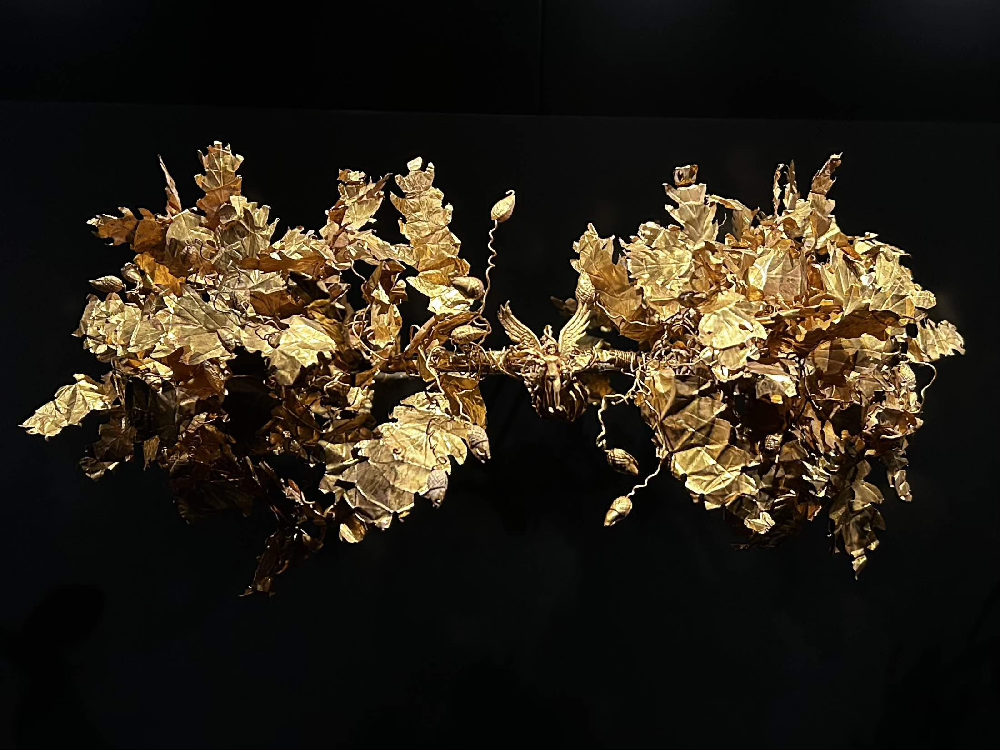
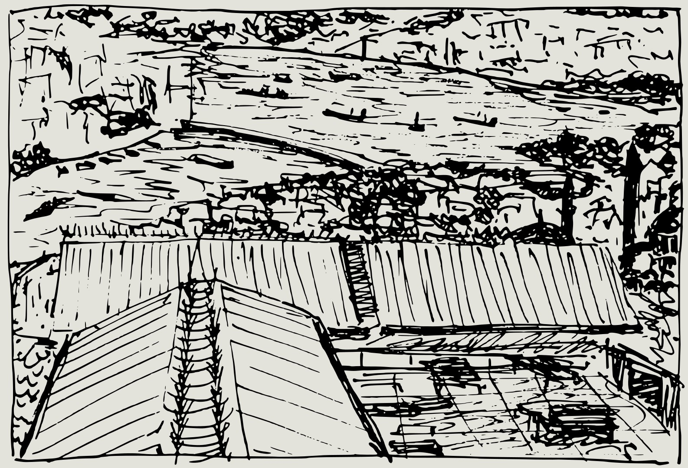

This is one of the most spectacular things I’ve seen in a while: a golden crown of maple leaves and acorns dating back to the 3rd century BC, discovered in Pergamon, modern-day Bergama, İzmir. Saw it at the İstanbul Archaeological Museums. It was incredibly delicate the acorns at the tips of the branches seemed to wiggle with every passerby.

13.09.2025

Sketched this from a rooftop in Eminönü, overlooking the Bosphorus. We had been sitting under the awnings in the picture just the other night. I hadn’t expected much from a café in that part of the city, but it turned out to be wonderful, especially the nighttime view: the Bosphorus on one side, Süleymaniye on the other. We spent a couple of hours reading our books before heading out for a long ferry ride.
09.09.2025
Anew, once again
I’m not sure what this blog will turn into. I’ve gotten extremely good at publishing websites for blogs, but when it comes to actually filling them with posts... well, that’s another story. Maybe it’s an obsession, this undying love for self-published sites. Over the years, I must have launched a dozen of them, purely for the joy of designing each one from scratch.
I still remember the first time I got my hands on a book about web design for kids. From that moment, I was fascinated by the idea of creating and publishing websites. It feels almost like an ancient practice now, yet I don’t think there’s any other way of publishing text-based content that offers quite the same level of creative control.
I don’t want this “blog” to be anything more than a single web page that displays snippets of content all at once. Not a site with separate post pages, categories, or tags... and definitely not one where each entry has its own share link. It’s simply a single page with entry after entry, but with a slightly smarter way of highlighting one at a time.
Once again, design takes center stage. Function exists only to reveal the potential of form. Something almost heretical in the world of text-based content.
08.09.2025